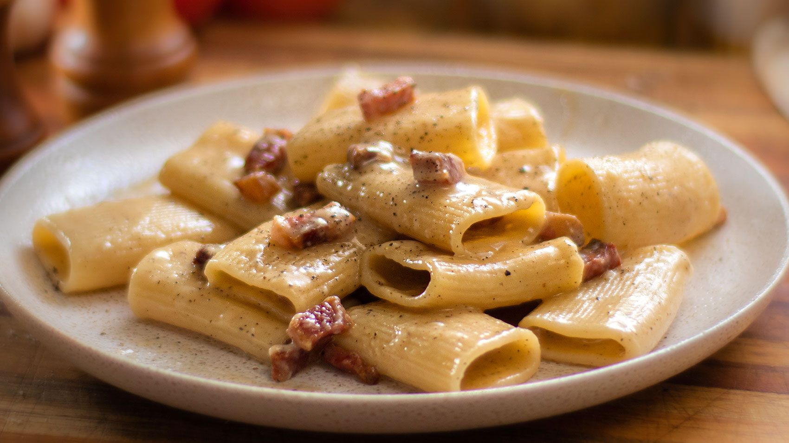

Pasta alla gricia is sometimes called amatriciana bianca (lit. white amatriciana), which reflects the common root of these two pasta dishes, though gricia is known to be older than the tomato-based amatriciana sauce.
Meal prep time : 50 minutes
Servings : 4